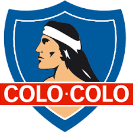

Minha identidade

Projeto 1
Joguei na base do Colo-Colo
Projeto 2
Apoiei o Ivan 11

Projeto 3
Trabalhei para Emilio automóveis
Olá! Meu nome é Rafael e sou Suporte de Sitemas. Tenho experiência em informática e tenho 18 anos.é um estudante dedicado e comprometido que completou o ensino médio no Centro Estadual de Educação Profissional (CEEP). Durante o período escolar, [ele/ela] se destacou por sua determinação acadêmica e habilidades excepcionais em [área de estudo específica, se aplicável]. O CEEP, conhecido por seu currículo voltado para a educação técnica e profissional, ofereceu a [ele/ela] uma base sólida em [disciplinas relevantes, como Tecnologia, Comércio, Saúde, etc.], preparando-o(a) para enfrentar desafios acadêmicos e profissionais futuros. Com um histórico de envolvimento em projetos [específicos, se houver] e uma paixão por [área de interesse ou atividade extracurricular], [seu nome] demonstrou um forte senso de responsabilidade e iniciativa. A experiência no CEEP não apenas contribuiu para o desenvolvimento acadêmico, mas também ajudou a moldar [suas/suas] habilidades práticas e o pensamento crítico. Além do conhecimento técnico adquirido, [seu nome] desenvolveu habilidades interpessoais e de liderança ao colaborar com colegas e participar ativamente de [atividades escolares ou eventos, se houver]. [Ele/Ela] está agora pronto(a) para aplicar esse conhecimento e essas habilidades em novos desafios, buscando continuamente oportunidades para crescer e se destacar em [área de interesse ou campo profissional].**
Joguei na base do Colo-Colo
Apoiei o Ivan 11
Trabalhei para Emilio automóveis